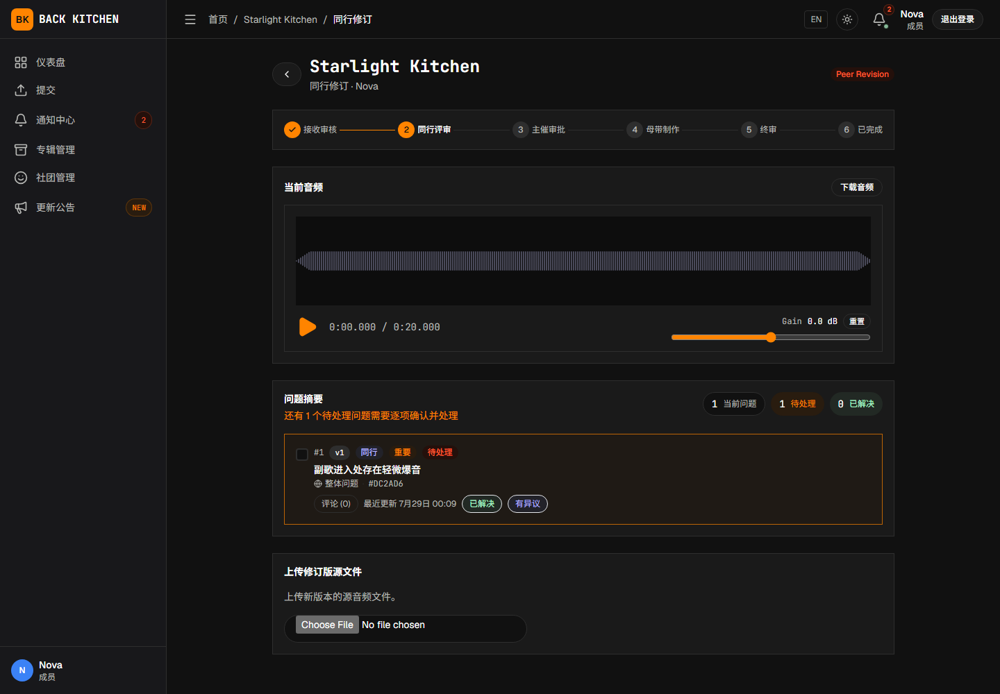

适用对象：投稿曲师；实际代外部曲师投稿的主催或副主催
投稿后，曲师可能需要在同行修订、主催修订、母带修订和终审阶段继续操作。每次上传新源文件都会建立新的版本记录，不会覆盖旧版本。
查看需要处理的反馈
- 从通知或仪表盘打开需要修订的曲目。
- 确认当前工作流阶段。
- 查看公开问题和评论。
- 使用严重程度和状态筛选需要优先处理的问题。
- 注意每个问题对应的源文件版本和时间位置。
- 在开始修改前确认所有要求已经理解。
同行评审内部问题不会显示给投稿曲师。曲师只需处理当前可见的公开问题。

更新问题状态
标记为已解决
已经按要求完成修改，或确认问题已经处理时，可将问题标记为“已解决”。建议同时填写处理说明，说明修改了什么。
标记为有异议
认为问题不需要修改、无法按建议修改或存在其他判断时，可选择“有异议”。应说明：
- 不同意的具体原因；
- 当前处理方式；
- 可能产生的影响；
- 是否需要主催或评审人进一步确认。
“有异议”不是删除问题。评审人或负责人可以继续讨论或重新打开问题。
批量处理问题
多个问题采用相同处理结果时，可以使用批量操作。提交前应检查所选问题，避免将尚未处理的事项误标为已解决。
上传同行修订版
曲目处于同行修订阶段时：
- 完成源音频修改。
- 在问题列表中更新相关问题状态。
- 选择新的修订音频。
- 根据需要填写“修订说明”。
- 根据页面选项关联本次处理的问题。
- 点击“上传修订版”。
- 等待上传完成。
上传成功后：
- 曲目版本号增加；
- 新文件成为当前源版本；
- 旧源文件继续保留；
- 曲目返回同行评审；
- 评审人收到新的处理任务。
处理主催要求的再次修订
主催在“主催审批”中要求再次修改时，曲目进入主催修订阶段。
操作方法与同行修订相同：
- 阅读主催问题和说明。
- 更新相关问题状态。
- 上传新的源文件版本。
- 根据需要填写修订说明。
- 提交后等待曲目返回“主催审批”。
修订说明为可选项；如填写，应明确回应主催提出的内容，方便其判断是否可以送母带。
处理母带阶段修订
母带工程师提出修订时，会先指定需要提交的内容：
- 修改并上传新的源音频；或
- 提交外部分轨链接，即通过团队使用的外部存储服务共享分轨文件。
曲师页面会直接显示母带工程师指定的表单，正常情况下无需自行选择提交方式。如果页面显示的要求与实际需要不一致，请先通过母带沟通联系母带工程师，由其重新确认修订要求。
上传新的源音频
- 确认页面要求提交源音频。
- 选择新文件。
- 根据需要填写修订说明。
- 更新相关问题状态。
- 点击“上传修订版”。
提交外部分轨链接
- 确认页面显示“提交分轨 / 多轨网盘链接”。
- 在“网盘链接、提取码和说明”中填写共享链接、提取码及必要的文件和版本说明。
- 自行确认链接权限允许母带工程师访问，并检查有效期。
- 点击“提交分轨链接”。
平台只检查该文本是否为空，不会自动验证链接格式、访问权限或有效期。需要补充多个文件时，应整理到同一个可访问的共享位置。
修订完成后，曲目返回“母带制作”，由母带工程师继续处理。
查看和比较历史版本
打开版本选择器，可以查看不同源文件版本的记录。在历史音频文件仍处于保留期内时，可以：
- 播放或下载旧版本；
- 查看版本号、上传者和修订说明；
- 查看绑定到该版本的问题；
- 比较修订前后的音频。
曲目完成后，平台当前默认只继续保留非当前源版本的音频文件 7 天。需要长期归档时，请及时下载。文件到期后，版本记录和关联问题仍可能保留，但旧音频不能继续播放或下载。
旧版本处于只读模式，不能用于创建针对当前制作的新问题。
在终审中确认母带
母带交付进入终审后：
- 打开当前母带交付物。
- 完整播放或下载文件。
- 查看交付说明和历史版本。
- 检查是否仍有需要处理的问题。
- 确认无误后点击“批准当前母带”。
只有主催和投稿侧都批准后，曲目才会进入“已完成”。多人合作曲目只需要其中一位绑定的平台曲师完成投稿侧批准，不要求每位曲师分别操作；确认前应先在团队内统一意见。主催已经批准并不表示投稿侧可以省略确认。
退回有问题的母带
当前终审界面可能同时显示“打回到「母带制作」”和“请求退回”。发现问题时，应先创建终审问题或发表评论，写明具体原因、时间位置和期望结果。
- 页面允许直接退回时，可以点击“打回到「母带制作」”。
- “请求退回”当前不可用，不应依赖该操作推进流程。
- 无法直接退回时，请联系主催代为处理。
不要在存在明确问题时先批准再退回。批准操作表示认可当前母带作为最终版本。
拒绝后重新提交
曲目处于允许重新提交的拒绝状态时：
- 打开被拒绝的曲目。
- 阅读拒绝原因。
- 准备新的源音频。
- 点击“上传新源音频”。
- 选择文件并等待上传完成。
重新提交会开启新的制作周期，并返回工作流第一阶段。旧周期记录不会被删除。
最终拒绝的曲目不会显示普通重新提交操作。
已完成后申请重新开启
已完成曲目需要再次进入正式制作流程时，投稿曲师可以：
- 选择申请重新开启；
- 选择希望返回的工作流阶段；
- 填写重新开启原因；
- 提交申请。
申请获批时会使用曲师提交时选择的目标阶段。返回首个交付阶段或更早阶段时，平台会建立新的制作周期；返回晚于首个交付阶段的阶段时，不会增加周期。重新开启会清除当前母带的双方批准状态，需要重新终审。
提交申请后，主催会收到通知，但当前普通主催页面不会显示申请原因和目标阶段，也没有“批准 / 拒绝”控件。提交前应先与主催确认重新开启安排；提交后还需联系平台管理员从管理后台处理，否则申请会一直停留在待处理状态，并阻止再次申请重新开启或源音频补交。
不要让主催另行使用“直接重新开启”替代申请审批。直接重新开启不会将原申请标记为已处理，可能留下仍处于待处理状态的申请。
提交源音频补交申请
专辑启用源音频补交后，页面会在符合条件的非修订阶段提供补交入口，不限于已完成曲目。
提交前应确认这不是当前修订阶段可以正常处理的文件更新。申请提交后：
- 曲目立即进入源音频补交待处理状态，普通工作流操作暂时停止；
- 当前审批卡不能让审批人直接试听或下载暂存文件，应通过团队认可的安全方式另行提供可核对的文件；
- 批准目标不能是修订阶段，也不能晚于首个交付阶段；
- 批准会建立新的制作周期，使新文件成为当前源版本，并使旧的当前母带失效；
- 拒绝后，曲目恢复申请前的阶段；
- 投稿侧可以在审批前点击取消，取消后暂存文件会被删除，曲目恢复申请前的阶段。
源音频补交会使已经完成的评审或母带工作需要重新进行。申请说明中应写明补交原因、文件版本和影响范围，并在提交后与主催确认核对方式。
常见问题
上传新版本后旧文件还在
这是正常行为。平台保留不可变的历史版本，用于比较和追踪制作过程。
问题标记为已解决后又被重新打开
评审人或负责人检查新版本后仍认为问题存在，可以重新打开。请查看新增评论并继续处理。
外部分轨链接无法提交或无法访问
请确认页面要求的是外部分轨链接，并自行检查共享链接、提取码、分享权限和有效期。平台不会自动验证链接格式或可访问性，建议使用不需要额外申请权限的团队共享链接。
主催已经批准，但曲目仍处于终审
投稿侧还需要点击“批准当前母带”。双方都批准后曲目才会完成。
相关说明